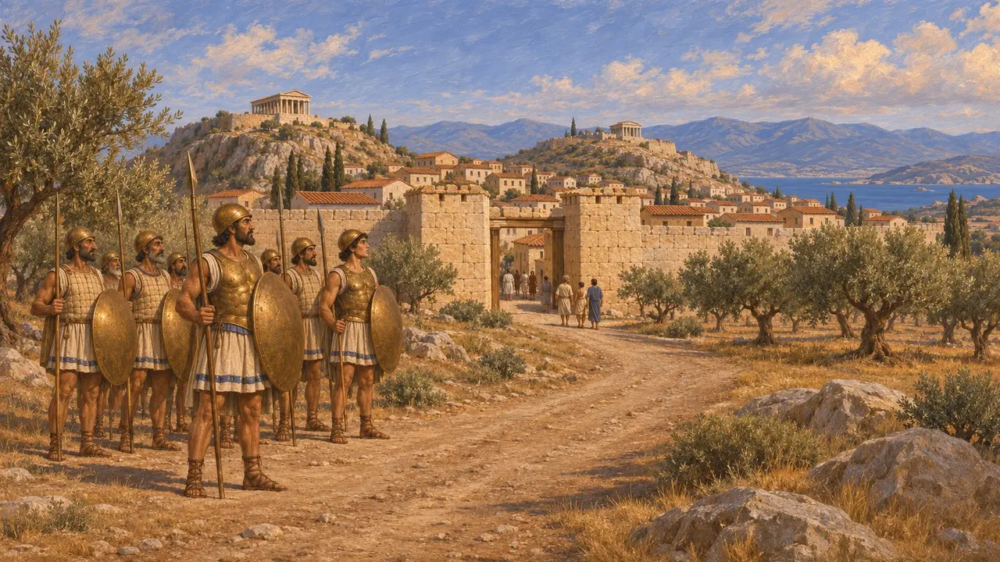
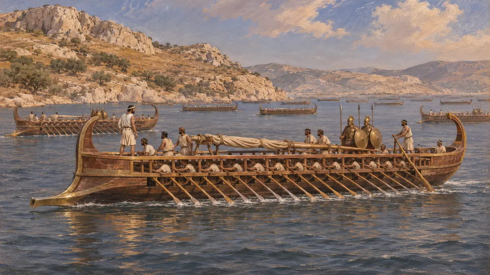
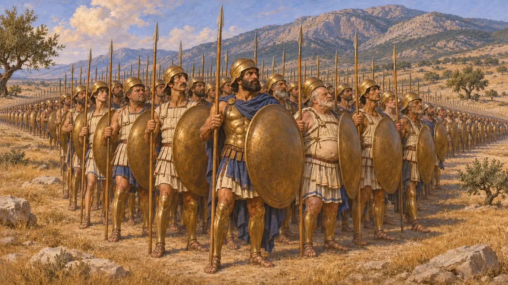
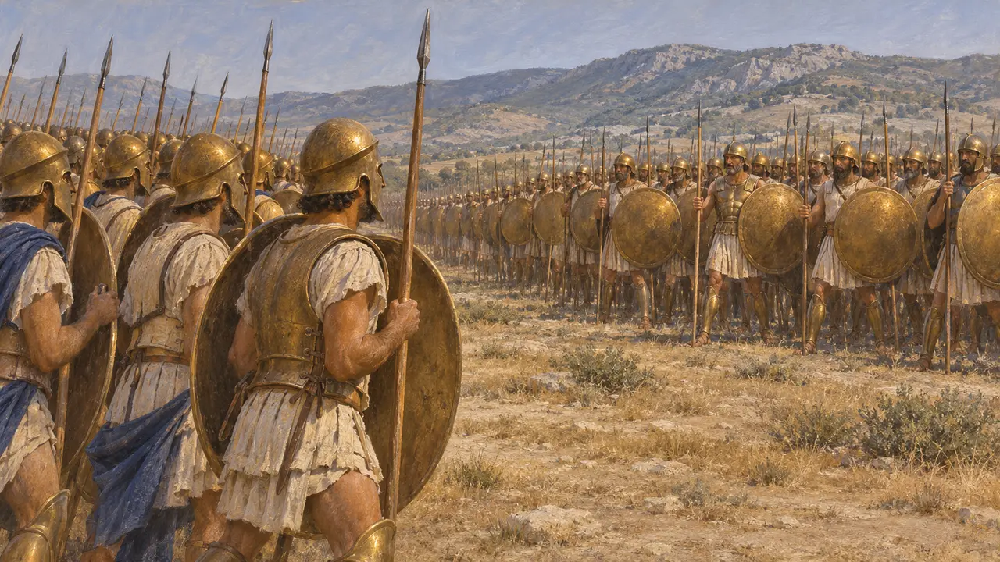
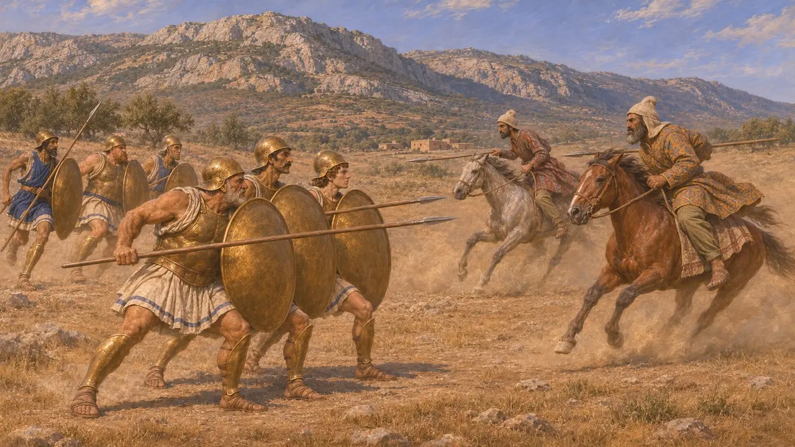
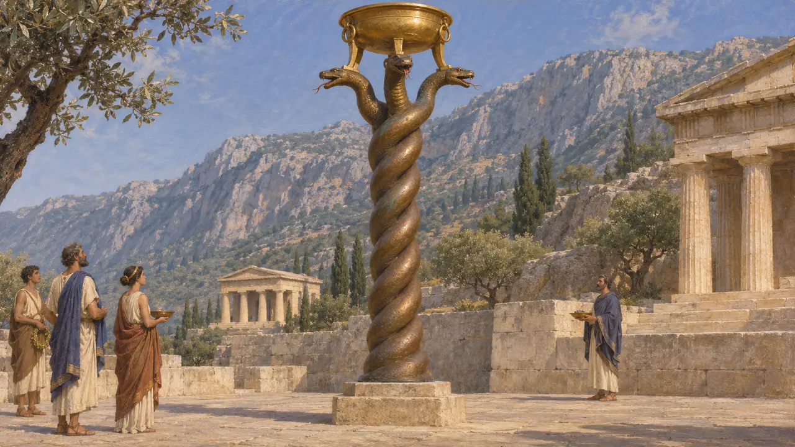

I Megaresi
Greci di Megara sull'istmo, in lotta contro Serse e Mardonio, 480-479 a.C.
Nel gioco: Livello 11: Il finale
I Megaresi erano il popolo di Megara, una città greca tra l'Attica e il Peloponneso. Erodoto dice che mandarono navi a Salamina e un grosso corpo di opliti a Platea. Sono un popolo minore nella storia persiana, ma tennero il loro posto nella linea greca a Platea e soffrirono nei combattimenti prima e dopo la battaglia.
Nel gioco: Il gioco nomina i Megaresi solo nella Cronaca, nei decreti e nelle note di campagna, e non dà loro una meccanica propria. La loro posizione di fronte agli alleati greci di Mardonio a Platea segue Erodoto 9.31.

Una città sull'istmo
Racconto anticoMegara si trovava tra l'Attica e il Peloponneso, sulla via di terra verso il Peloponneso. Erodoto annovera i Megaresi tra i Greci che si opposero a Serse. Non li elenca tra quelli che diedero terra e acqua al Re, ma la lista di queste città è sua e può essere incompleta.
Herodotus 7.132

Navi a Salamina
Racconto anticoErodoto dice che Megara mandò venti navi a Salamina. Era un contributo modesto accanto alle flotte ateniese e corinzia. La cifra è sua, e nessuna fonte persiana menziona i Megaresi.
Herodotus 8.45

Tremila opliti a Platea
Racconto anticoNella sua lista dell'esercito greco a Platea, Erodoto attribuisce ai Megaresi 3.000 opliti. Li colloca nella lunga linea dei contingenti cittadini, tra l'ala destra spartana e la sinistra ateniese. I numeri sono il suo racconto e nessun documento dell'epoca li conferma.
Herodotus 9.28

Di fronte ai Greci dalla parte del Re
Racconto anticoErodoto dice che Mardonio schierò i Greci passati dalla sua parte contro Ateniesi, Plateesi e Megaresi. Erano i Beoti, i Locresi, i Maliesi, i Tessali e mille Focesi. Dice che i Persiani stessi furono posti di fronte ai Lacedemoni. In questo ordine previsto i Megaresi avevano di fronte Greci, non Persiani.
Herodotus 9.31

La cavalleria a Eritre e l'inseguimento
Racconto anticoPrima della battaglia principale, dice Erodoto, i Megaresi tenevano il terreno più esposto a Eritre e furono duramente incalzati dalla cavalleria di Masistio. Chiesero aiuto, si fecero avanti volontari ateniesi e Masistio fu ucciso nello scontro che seguì. Dopo la caduta del campo persiano, Erodoto dice che cavalieri tebani abbatterono nella pianura alcuni Megaresi e Fliasi.
Herodotus 9.21-22; 9.69

Nomi sulla colonna serpentina
Nelle fontiCon il bottino di Platea i Greci dedicarono a Delfi una colonna serpentina di bronzo incisa con i nomi delle città che combatterono. Le sue spire si conservano a Istanbul, dove fu portata più tardi, e i Megaresi sono tra i nomi incisi. È la testimonianza greca della loro parte nella guerra, non una persiana.
Serpent Column inscription; Herodotus 9.81
Fonti
- Herodotus 9.28
- Herodotus 9.31
- Herodotus 8.45
- Herodotus 9.21-22
- Herodotus 9.69
- Herodotus 9.81